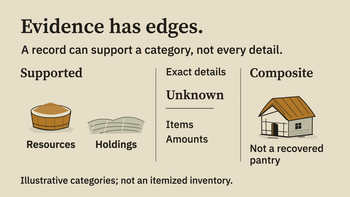
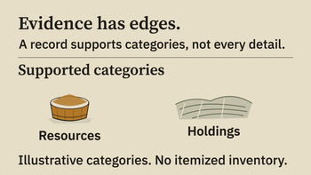
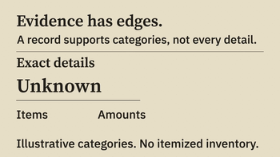
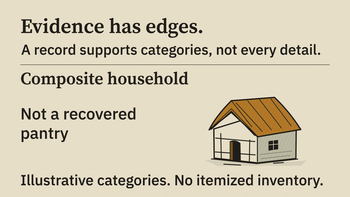

All seven studies
Evidence Boundary · before and after
v012 · simultaneous columns

v013 · held stages



The final render measures 14.22 px minimum essential text at 350 px and
holds the settled composite for 2.33 seconds. These samples do not
establish continuous audiovisual acceptance.